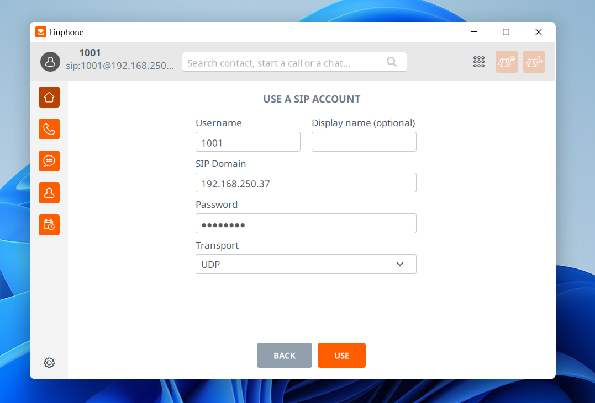
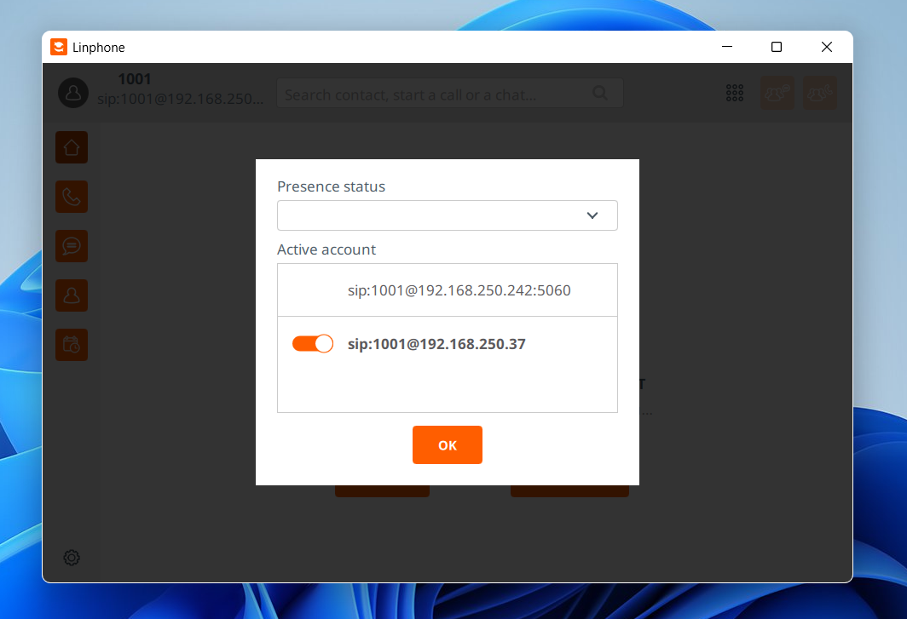
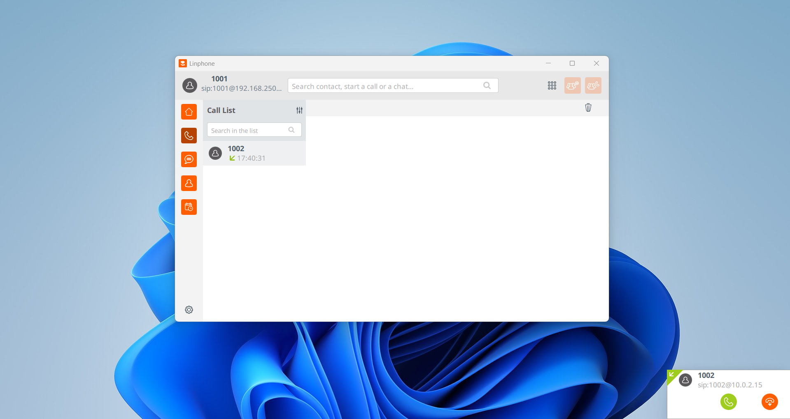
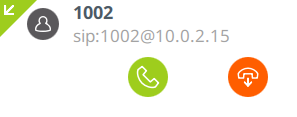
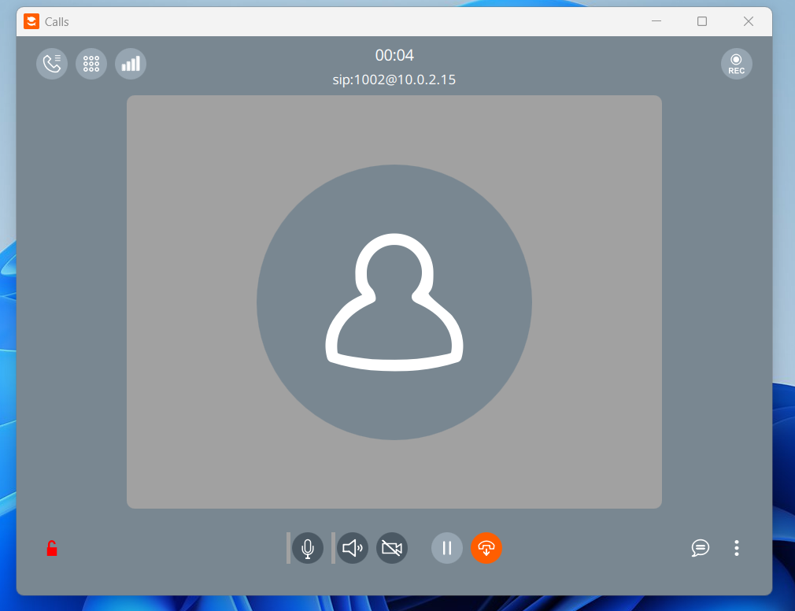
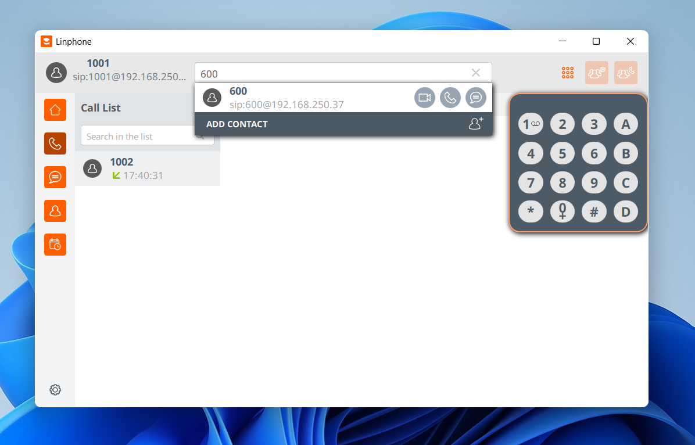
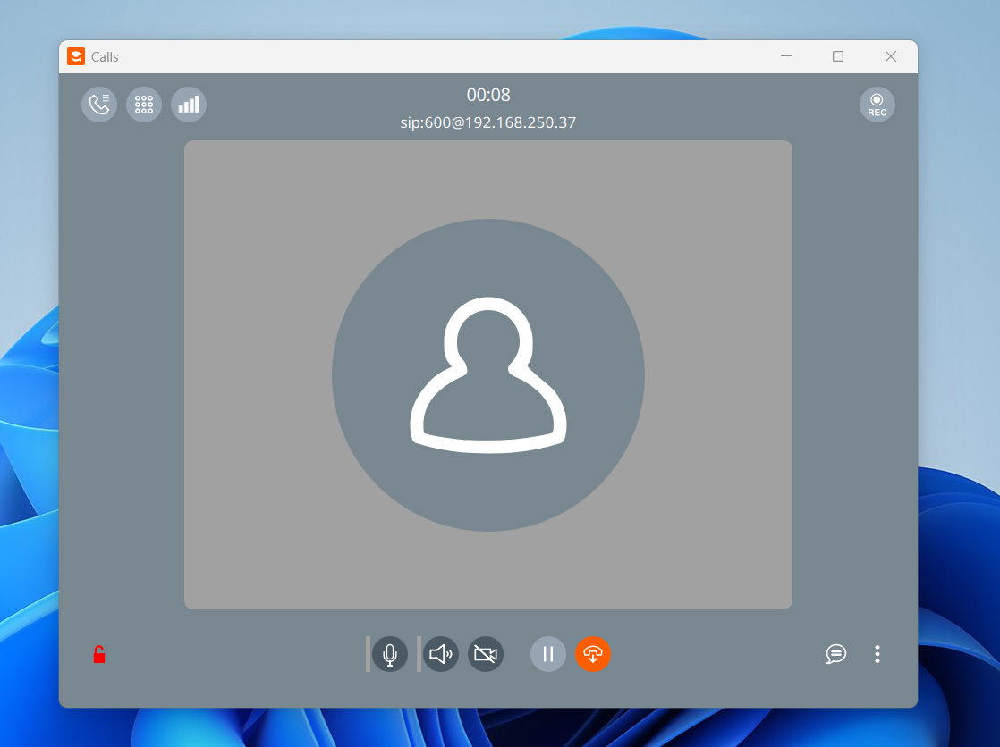
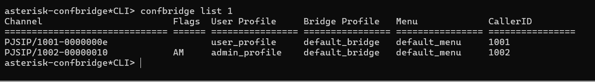

Test Setup
The setup consists of an Asterisk virtual machine running on a AlmaLinux/9 host, configured as a SIP-based PBX and
conference server.
The Asterisk VM has essential configuration files including pjsip.conf for defining SIP endpoints
like Linphone clients,
extensions.conf for dialplan rules that route calls and handle conferences, and
confbridge.conf for managing conference rooms and participant settings.
pjsip.conf specifies each user’s credentials, IP, and allowed codecs, while
extensions.conf defines how calls are directed—such as joining a ConfBridge room.
confbridge.conf sets conference parameters like music-on-hold, participant limits, and admin
privileges.
Linphone clients connect over SIP using the credentials defined in pjsip.conf, register with the
Asterisk VM,
and can then place or join calls according to the dialplan, allowing users to participate in voice conferences
with audio routed entirely through the Asterisk server.
Linphone

The user uses a softphone application (Linphone) to connect to the Asterisk server. In the softphone settings, you
enter
the username and password that are defined in the pjsip.conf file on the server. The SIP domain is
set to the IP address of the Asterisk server (in this case, the AlmaLinux VM), which tells the softphone where
to send its SIP REGISTER requests.
When the softphone attempts to register, it sends a SIP REGISTER message to the server,
announcing its contact address so the server knows where to route incoming calls. Asterisk checks the
credentials provided by the softphone and, if they match the configuration in pjsip.conf, it
authenticates the user and completes the registration.
Communication uses UDP, which is commonly chosen for VoIP because it introduces less overhead and latency compared to TCP. Although UDP does not guarantee packet delivery or ordering, real-time voice traffic benefits more from speed and low delay than from reliability mechanisms, making it the preferred protocol for SIP signaling and RTP audio streams.

sip:1001@192.168.250.37 is a SIP URI (Uniform Resource Identifier) that identifies a specific SIP
user on a server.
- 1001 is the username or extension of the user.
- @ separates the username from the domain.
- 192.168.250.37 is the SIP domain, usually the IP address or hostname of the SIP/Asterisk server.
So sip:1001@192.168.250.37 essentially tells the network: “I want to reach the SIP user
1001 on the server at 192.168.250.37.” It’s similar to an email address but for
voice over IP, and it’s used in registration, dialing, and routing calls between SIP endpoints.


When receiving an incoming call from user 1002, the popup shows
sip:1002@10.0.2.15. It displays this address instead of the Asterisk server’s
192.168.250.37 because Linphone shows the IP address that the caller’s device actually
registered with. Since the Asterisk server is running inside a VirtualBox VM, VirtualBox gives the VM a NAT
interface in the 10.0.2.x range. When the caller (1002), who is on the same
192.168.250.0/24 LAN, registers to Asterisk, their connection passes through the VM’s NAT
interface. As a result, Asterisk stores 10.0.2.15 as the caller’s contact address, and that is the
address Linphone displays during the incoming call notification.


These two images show a Linphone call from both sides, with the caller displayed at the top as
100X@10.0.2.15. On the server side, the Asterisk server has received a SIP INVITE from
user 1002 and has routed the call to our Linphone client. Asterisk manages the signaling for the call,
ensuring both endpoints know how to establish a direct media path (RTP) for the audio, while handling
call states, authentication, and any dial plan rules in the background.

This Linphone screenshot shows the dialpad with 600 entered, displaying
sip:600@192.168.250.37 at the top and the option to place the call. When we press
the Call button, Linphone sends a SIP INVITE to the Asterisk server at
192.168.250.37 for extension 600. On the server side, Asterisk consults
extensions.conf and sees that extension 600 is configured to join a conference via
ConfBridge. The server then sets up the call and connects our Linphone client into the
conference room.
If we dial 601 instead, Asterisk follows the same extensions.conf
rules and places that caller into the same conference. However, the configuration designates extension
601 as the admin for the conference, giving that user administrative privileges such as muting or
kicking participants. All of this happens automatically on the server, with Asterisk handling the
signaling, conference logic, and permissions behind the scenes.


